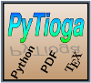

Partial list of current and past projects to which Okome Studio has contributed:
kcorrect
kcorrect is a Python port of kcorrect, written by IDL and C to compute k-correction to astronomical magnitudes of galaxy photometry by spectral energy distribution fitting technique.

PyTioga
PyTioga is a Python port of Tioga, one of the best open-source 2D plotting tools on Ruby. The project is isurrently inactive due to Matplotlib becoming the de facto standard in 2D visualization on the Python scientific community.